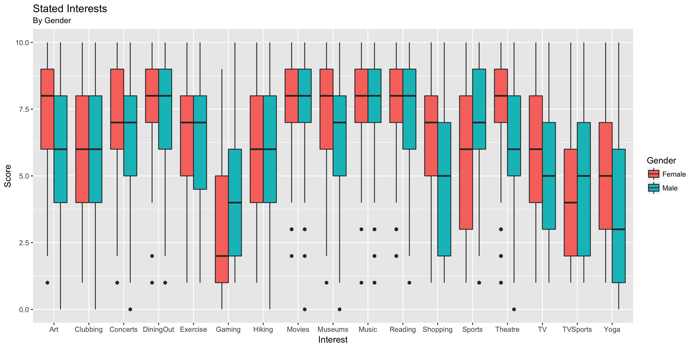
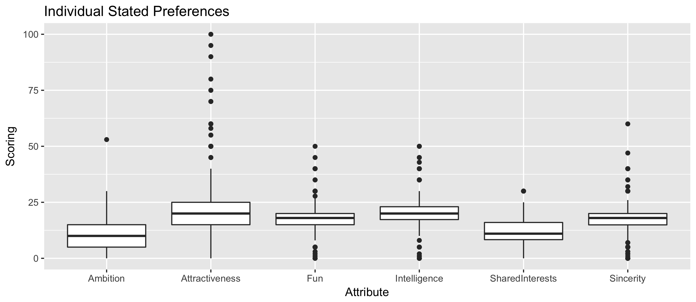
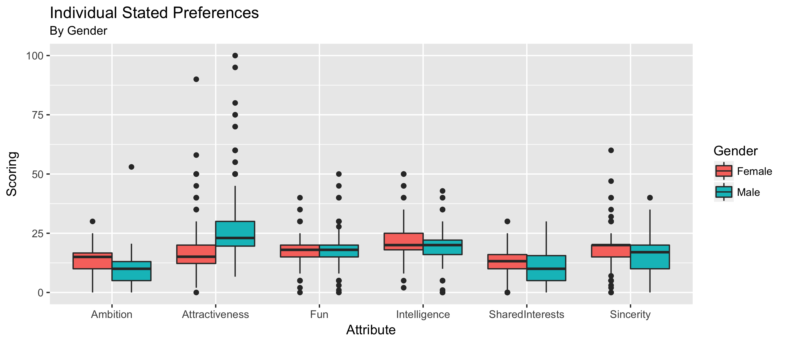
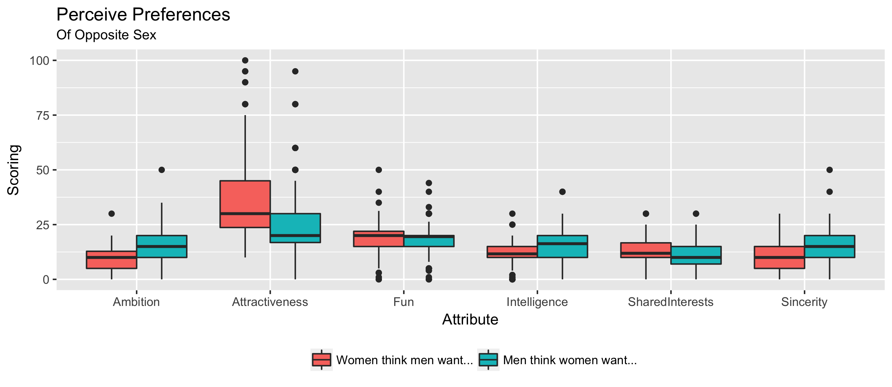
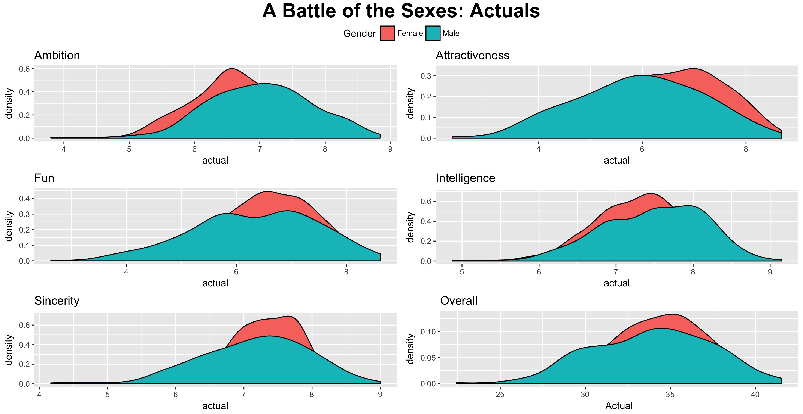
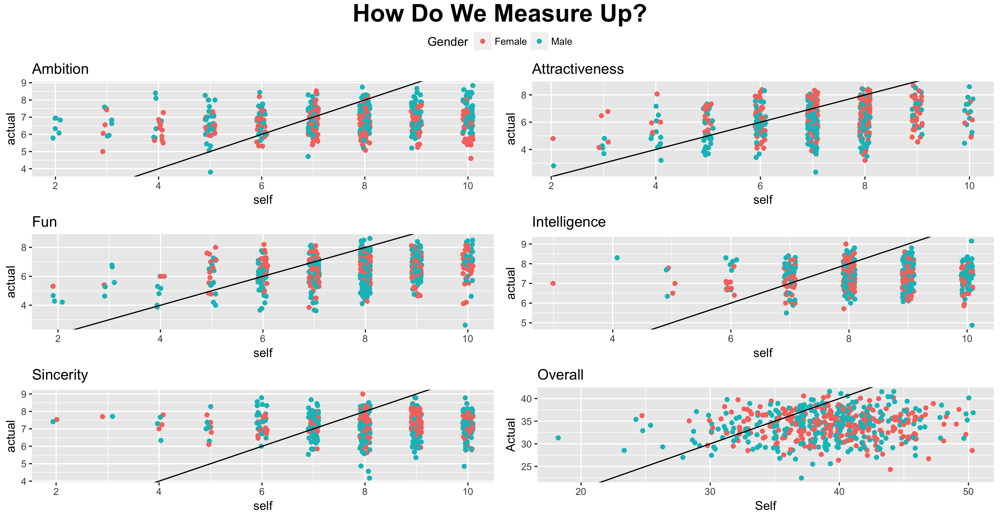

- Sat 30 June 2018
- posts
- Ryan Cushen
- #statistics, #R, #data analysis, #classification
Speed Dating
A topic near and dear to all single hearts (and some coupled) the world over: what does the opposite sex desire? In this post, we make an attempt to disentangle the lies, deceit and downright treachery, while also learning about the concept of revealed preferences and the logistic regression model.
Introduction
In recent years, classification has become perhaps the most glamourous and exciting application of statistical learning techniques. Known also as supervised learning, it is these methods that underpin some of the most well-known machine learning technologies, such as computer vision and voice recognition. However, one often underreported drawback is the requirement of labelled training data, which is not so easy to come by. Fortunately the dataset we use in this post contains exactly the kind of closed-world experimental data that is ideal for developing a classification model -- moreover, it is a binary response case so it's perfect for the logistic regression tool we will be implementing.
The Dataset
The data we will be using was gathered by two business school professors from Columbia University (Ray Fisman and Sheena Iyengar) as part of their paper Gender Differences in Mate Selection: Evidence From a Speed Dating Experiment. It details the results of a series of speed-dating encounters between men and women, as well as a questionaire that each participant was asked to fill out regarding their own preferences and characteristics (for a more complete overview of the dataset, see here).
To better understand the individuals who comprise our sample, let's take a quick look at their interests. Unsurprisingly, they're a pretty high-brow bunch! As part of the speed-dating excercise, each individual was asked to rate their interests out of ten across a spectrum of activities: the results are given below, split out by gender.

Movies, music, reading and dining out all score highly across both genders, with hiking and exercise not far behind. However, in other areas, there are much larger differences between genders. This bodes well for the rest of our investigation, as it suggests there is indeed the beginnings of variance between men and women.
A Review of Logistic Regression
The logistic regression model is perhaps the simplest tool in the statisticians toolbox for tackling the problem of classification. In its simplest form, it offers a model for the conditional probability of a binary response variable \(G\), given some matrix of features \(X\). This model is derived by making two small adjustments to the standard linear regression model, given as
Firstly, the expected value \(G\) can now be called a probability. Let us denote this as \(\text{Pr}(G =1|X = x ) = \pi\). The above equation can therefore be rewritten as
We thus have a simple linear model for the probability of our response variable \(G\). However, is this appropriate? If we were to simply estimate this model as usual, the predicted probabilities would not be bounded. In other words, we may end up with a predicted probability greater than one, or less than zero! To combat this, we apply the logistic transformation,
which bounds all predicted values between zero and one. The final logistic regression model is hence written as
(as an interesting aside, the logistic curve is a common model of population growth, derived as the solution to a differential equation. looking at a plot of the curve, one can see how it would provide an appropriate model for a growing population which ultimately reaches carrying capacity).
Since we no longer have a linear model, OLS cannot be used to estimate the parameter set \(\theta = \{ \beta_0, \beta\}\). Instead, maximum likelihood estimation is employed. The log-likelihood function for \(N\) observations is given by
where recall that \(\pi_i(x_i ; \theta ) = \text{Pr}(G = 1| X = x_i ; \theta)\). This is then solved numerically -- R uses iteratively reweighted least squares.
Analysis
Stated Preferences
Perhaps the most obvious place to start is by looking at what people say they want. Across all individuals in the sample, we see that attractiveness and intelligence are the clear winners. Moreover, attractiveness has a large number of outliers, suggesting that for many individuals, being unattractive is an absolute dealbreaker. Tough crowd! ...., and fun and sincerity are not too far behind. Surprisingly, the latter beat out ambition -- perhaps these high powered business-school folk are romantics after all!

Looking at a more granular breakdown by gender, we see nothing too surprising. Many of our common stereotypes are confirmed: men claim to care significantly more than women about attractiveness, whereas women claim to care more about ambition and intelligence. It is nonetheless heartening to note that both sexes place almost exactly the same value on fun!

We can also look at what each sex thinks the other desires. And in fact, we are broadly quite good at intuiting -- both men and women come very close to estimating the true preferences articulated above. Both genders do however overestimate the value of attractiveness!

Since the data had such fields available, it seemed like another interesting question might have been how these stated preferences vary across more general demographic categories. However, breaking down by age, neighbourhood income and profession yielded nothing of particular interest.
Revealed Preferences
So this is what people say they want in a partner. However, do they actually follow through and match with people who fit this bill? Or did they just respond with what they thought sounded good? Of course, this need not even be a conscious deception – more likely, people don't actually know what they want. As is well established, self-reported survey results are notoriously noisy, and often straight-up wrong. Economists have formulated the idea of revealed preferences to tackle this problem, which basically says that we shouldn't trust what people say, but rather what they do. In the dating context, this means looking at the types of people that an individual actually wants to match with, rather than the types of people who match their stated preferences. And fortunate for us, this is exactly the data we have available.
Some Harsh Truths
To understand this idea of revealed preferences, we're going to need a 'true figure' for each attribute. This can be calculated as the average rating that each individual receives across their ten potential partners – which as an aside, also gives us a glimpse into the differing ways men and women evaluate each other. The story here is that men have much more variability: across every dimension, the distribution of actual scores for men is broader.

And how do these 'actual' values compare with self-assessments? In other words, how accurately do people evaluate their own value? As we will see, everyone is a bit of an egotist after all – we all dramatically overestimate ourselves. How depressing!

Predicting Matches
Having defined our variables, we can now form a model to test this idea of revealed preferences a little more rigourously. A proposition: if people know what they want in a partner, then---holding all else constant---we would expect them to match with people who fit their preferences profile. As such, pairings with a small distance between the preference set and true attributes would be more likely to end in a match, while those with a large distance would not. This implies that the distinction between stated and revealed preferences can be tested through the significance of this distance variable!
Let's start with a simple model, for reference. We take the following independent variables: Gender Pairing order in the evening Initial correlation of shared interests Same race? Age difference Actual attributes of the partner
and we try to predict whether the individual wanted to match. Note that this only draws on the actual qualities of the partner, and not the stated preferences of the individual. Nonetheless, we would expect a reasonably significant model -- match probability would likely be increasing actual attributes. Using a logistic regression, we obtain 65% accuracy on a held-out test set. This is nothing especially impressive, but perhaps more interesting is the estimated coefficients...
Now let us include stated preferences. Specifically, we incorporate a variable describing the difference between stated preferences and actual values...
Conclusions
So what is the conclusion from this dismal dating dilemma? Many would argue that economists should focus on revealed preferences over stated preferences -- in other words, they should analyse what people do, and avoid the temptation to theorise about why they do it.